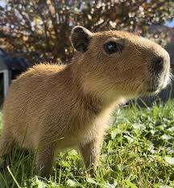
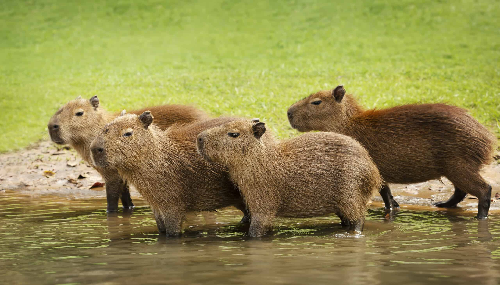
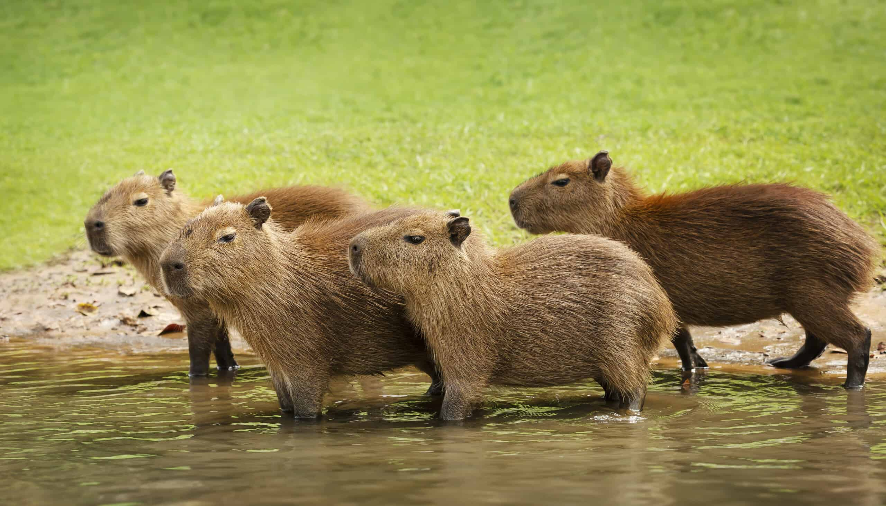

Gallery

.jfif)
.jfif)
.jfif) 

Meet the Capybara!

Overview
What are Capybaras?
The capybara or greater capybara (Hydrochoerus hydrochaeris) is the largest living rodent, native to South America.
The Capy-Family
It is a member of the genus Hydrochoerus. The only other extant member is the lesser capybara, Hydrochoerus isthmius. Its close relatives include guinea pigs and rock cavies, and it is more distantly related to the agouti, the chinchilla, and the nutria.
How do they live?
The capybara inhabits savannas and dense forests, and lives near bodies of water. It is a highly social species and can be found in groups as large as one hundred individuals, but usually live in groups of 10–20 individuals. The capybara is hunted for its meat and hide and also for grease from its thick fatty skin.
Fun Facts About Capybaras
- They can weigh up to 70 kg.
- Capybaras are semi-aquatic and really good swimmers.
- They have webbed feet which helps them move easily in water and soft ground.
- They nap in water, sometimes with just their noses poking out.
- They’re super social and often live in groups of 10–20, sometimes more.
- Other animals love them. Birds, monkeys, even cats hang out on them.
- They purr like cats when they're happy or relaxed.